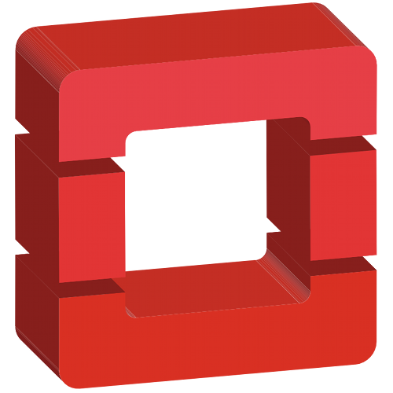

Introduction to 
有一天
這裡有
一台 GW，
兩台 Switch，
三台 NAS，
四台 Server，
五台…
麻煩弄個開發環境出來
好哦~
啊，另外還要弄幾個測試的環境
環境之間不要彼此汙染哦！
用 Virtualization 或 Container 好像 OK!?
啊，以後可能還會看情況增減硬體
環境什麼的最好可以很簡單的擴充
負載平衡什麼的也考慮一下
另外找個方法讓管理更方便一點
What is Openstack ?
整合分散的硬體資源 + 有效的分配 的平台
資源分配
- CPU ： Nova
- Memory ： Nova
- Storage ： Cinder or Swift
- Network ： Neutron
擴展容易
- 接電接網路
- 裝 Package
- 抄設定檔
- ...............就這樣 XD
移除設備也很簡單
- 該備份備份一下
- 該搬的 VM 搬一搬
- 拔電拔網路
- ...............End
Admin Friendly
- 資源狀態的監控：Celimeter
- 管理者介面：Horizon
VM 輕鬆佈署
- 模版功能：Heat
- 自動化管理：Puppet
LIVE DEMO!!
虛擬硬體 (Flavor)
Network
Image
RAW v.s QCOW2
qemu-img convert -O qcow2 XXX.bin XXX.qcow2Instance
Security Group
Floating IP
WebUI 功能還不夠完整...
建議參考 Command Cheat Sheet 或者 官方的 CLI Reference
Enjoy it!
試試水溫...
或者...
沒有 Q & A